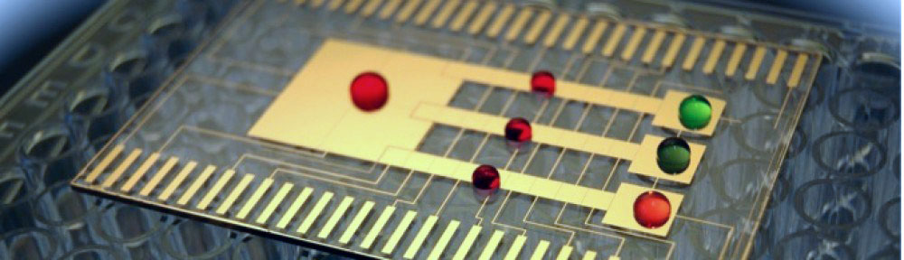
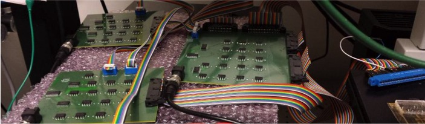
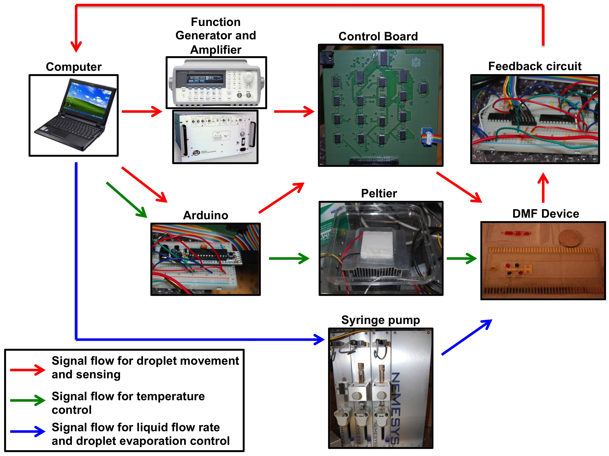
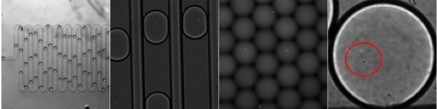

Microfluidics has been touted as a tool to manipulate fluids at the micro- and nano-liter scales and has shown considerable promise for biology and chemical research. Its unique feature of precisely handling liquids for a chemical or biological assay has made them attractive to replace traditional experiment approaches. We develop automated lab-on-chip devices for cell culturing and analysis, single cell transformation, and engineering microorganisms that will be used to produce renewable sources of fuel and to develop new medicines for eradicating disease. Our group is focused on an inter-disciplinary approach of combining and interfacing engineering, biology, and chemistry to solve these novel problems.
To create new microbes that can solve our world's energy and health problems using microfluidics. Read more »
Microfluidics

Microfluidics, also known as "lab-on-chip", is the miniaturization of devices to integrate chemical and biological processes on a hand-held device. Two paradigms of "lab-on-chip" technologies, namely, droplet and digital microfluidics, have enabled progress in areas of miniaturizing biology and chemistry and high-throughput screening.
Droplet microfluidics is a channel-based, two-phase flow fluidic system. Typically, aqueous monodisperse droplets of pL-nL volumes are formed with a surrounding oil phase and has emerged as a promising technology for high-throughput analysis (enabling creation and analysis of > 1000s of droplets).
Digital microfluidics (DMF) is a fluidic system where droplets are created and danipulated on an array of electrodes (with no channel) and is well-suited for adding reagents in parallel and mixing reagents on-demand without optimizing flow-rates. These so called technologies have been applied to numerous applications: cell culture and analysis, enzymatic assays, and clinical diagnostics with the advantages of decreased sample volume, parallelization, and ease of downstream integration. See our Publications section for more detail.
Videos
Automation

One of the main advantages with microfluidics is that it is capable of rapid analysis and is operated under reduced reagent consumption. These advantages are only realized if we are capable of integrating automation with microfluidics. Here, our research will focus on developing new automation systems for droplet control and delivery, feedback control sensing systems and developing downstream hardware systems. With a robust and reliable automation system, our goals for using microfluidics for health and energy application can be realized. A sample automation system workflow is shown below.

Single Cell Analysis

Analyzing the response of single cells to chemical and biological stimuli have enormous implications. Cell-to-cell differences play huge role in evolution and may be the key to unlocking the mysteries behind cell-to-cell communication, phenotypic differences, and eventually "reading" the response to what causes diseases. We are currently developing new microfluidic platforms that are capable of harnessing a single cell and interrogating them under different conditions and analyze their phenotypic response. We plan to combine automation with single cell analysis which will significantly increase the throughput and reduction of time required for analysis.
Synthetic Biology
Synthetic biology has become an approach to understand and to manipulate biological systems in bacteria and in yeast for numerous applications. This extremely challenging goal typically follows the process of Design-Build-Test-Learn. Nature is not capable of providing the 'ideal' microbe for our applications - we need to design and to engineer new organisms that can perform the functions that we want. In our group, we will be using synthetic biology and microfluidics to produce microbes that are useful for energy and health applications.
Design: To decide which hosts and DNA parts to use to produce the predictable response that we want.
Build: To assemble the different combinations of genes using DNA assembly methods.
Test: To perform biological assays on the engineered microbes.
Learn: Does the "new" microbe perform the function or produce the output that we desire?